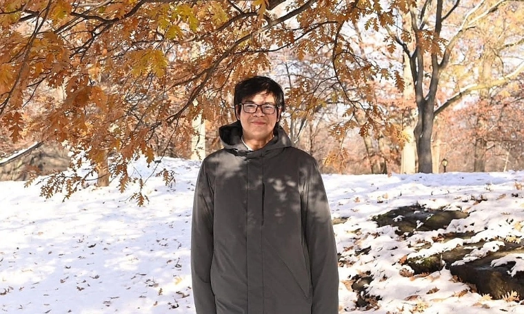
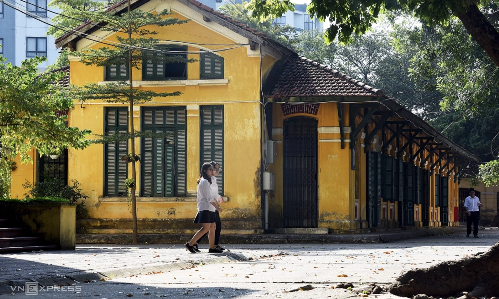

Đại học Bách khoa Hà Nội sẽ mở cơ sở ở Hòa Lạc
Đại học Bách khoa Hà Nội (HUST) sẽ có thêm khuôn viên ở Hòa Lạc, bên cạnh trụ sở chính ở phường Bạch Mai, Hà Nội và phân hiệu tại Hưng Yên.
Dù chỉ 1-2 sinh viên có nhu cầu xét bằng tốt nghiệp trong một tháng, trường Đại học Sư phạm Hà Nội 2 vẫn lập hội đồng xét duyệt, cấp bằng.
Đại học Bách khoa Hà Nội (HUST) sẽ có thêm khuôn viên ở Hòa Lạc, bên cạnh trụ sở chính ở phường Bạch Mai, Hà Nội và phân hiệu tại Hưng Yên.

Lê Quang Dũng, chủ nhân huy chương vàng Toán quốc tế 2017, có bài mở đầu chuỗi công trình giải quyết một bài toán lớn không có lời giải suốt hàng chục năm về phi tham số Bayesian.

13 trường đại học ở Hà Nội bắt đầu nhận hồ sơ đăng ký xét tuyển, ở nhiều phương thức, hạn chủ yếu đến 20/6.

Việc coi đầu ra của trường chuyên hướng tới 'chuẩn quốc tế' là chứng chỉ SAT, AP, du học, và được thúc đẩy bằng ngân sách nhà nước, gây tranh luận trái chiều giữa các chuyên gia giáo dục.
Giải "nhoay nhoáy" nếu bài yêu cầu tính diện tích hình trụ, nhưng Hoài Anh lại "cắn bút" nếu đề được đổi thành thiết kế vỏ lon nước ngọt sao cho tốn ít nhôm nhất, dù bản chất như nhau.